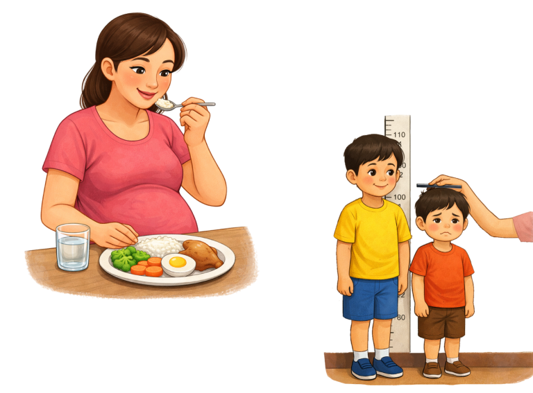
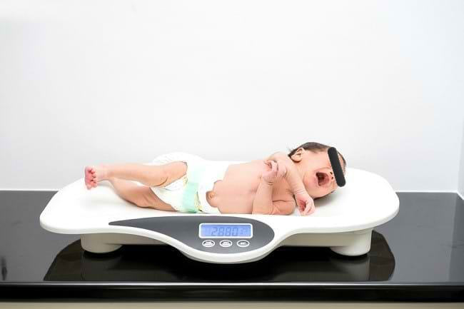
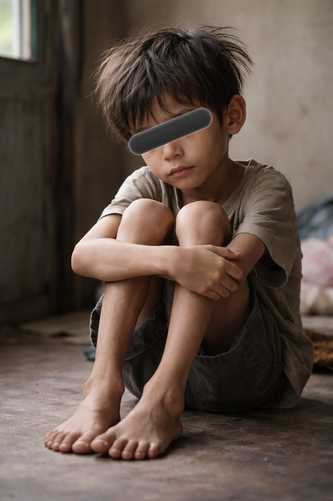
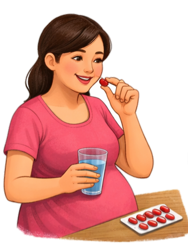
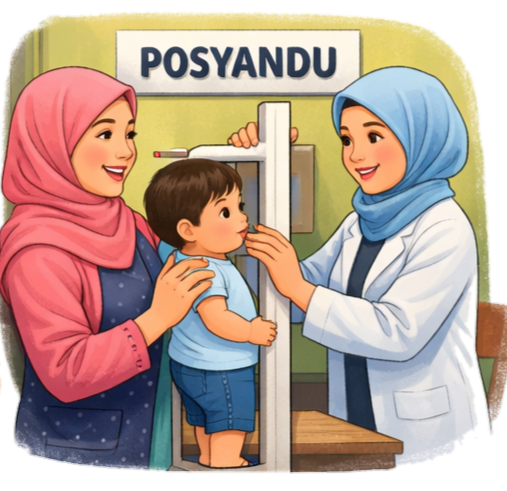

Apa itu Stunting?
Stunting adalah kondisi ketika tinggi badan anak lebih rendah dari standar tinggi badan anak seusianya berdasarkan nilai z-score tinggi badan menurut umur yang berada di bawah <-2 standar deviasi. Stunting merupakan dampak dari kekurangan gizi kronis terutama pada masa 1.000 hari pertama kehidupan, yang dapat menyebabkan gangguan pertumbuhan dan perkembangan anak secara permanen.
19,8%
Prevalensi Stunting
Indonesia • 2024
1000 HPK
Periode Emas
Hari Pertama Kehidupan
FAKTOR PENYEBAB STUNTING
Multifaktorial, dimulai dari masa kehamilan hingga balita.
1.Kekurangan Asupan Energi dan Protein
Kekurangan asupan energi dan protein merupakan salah satu faktor utama yang menyebabkan stunting. Ibu hamil yang tidak memperoleh asupan gizi yang cukup serta mengalami penyakit infeksi berisiko melahirkan bayi dengan berat badan lahir rendah (BBLR) atau panjang badan di bawah standar, karena pertumbuhan janin di dalam kandungan tidak berlangsung optimal. Kondisi ini dapat berlanjut setelah kelahiran apabila anak tidak mendapatkan asupan makanan yang cukup baik dari segi jumlah maupun kualitas dalam jangka waktu yang lama, sehingga menghambat proses pertumbuhan.
2.Penyakit Infeksi
Penyakit infeksi seperti diare dan infeksi saluran pernapasan dapat memperburuk kondisi gizi anak. Ketika anak sering sakit, nafsu makan biasanya menurun sehingga asupan makanan menjadi kurang. Selain itu, infeksi juga dapat mengganggu penyerapan zat gizi di dalam tubuh.
3.Pola Asuh
Pola asuh yang kurang tepat, terutama dalam pemberian makan, sangat berpengaruh terhadap kejadian stunting. Anak yang tidak mendapatkan ASI secara optimal, tidak diberikan makanan pendamping sesuai usia, atau tidak memperoleh variasi makanan yang cukup akan berisiko mengalami kekurangan gizi.
4.Sanitasi Lingkungan dan Pelayanan Kesehatan
Lingkungan yang kurang bersih dapat meningkatkan risiko penyakit infeksi pada anak. Sanitasi yang buruk, seperti tidak tersedianya air bersih dan fasilitas jamban yang layak, dapat menyebabkan gangguan kesehatan yang berdampak pada penurunan status gizi. Selain itu, kurangnya pemanfaatan pelayanan kesehatan seperti pemeriksaan rutin dan pemantauan pertumbuhan anak juga dapat menyebabkan masalah gizi tidak terdeteksi sejak dini.
5.Faktor Ekonomi
Kondisi ekonomi keluarga berhubungan erat dengan kemampuan memenuhi kebutuhan gizi anak. Keluarga dengan pendapatan rendah cenderung memiliki keterbatasan dalam menyediakan makanan bergizi dan mengakses pelayanan kesehatan.
6.Faktor Pendidikan
Tingkat pendidikan orang tua, terutama ibu, mempengaruhi pemahaman tentang gizi dan kesehatan anak. Ibu dengan tingkat pendidikan yang lebih rendah seringkali memiliki keterbatasan dalam menerima dan memahami informasi tentang pola makan yang benar dan cara pencegahan stunting.
7.Faktor Lingkungan
Lingkungan tempat tinggal, baik lingkungan rumah maupun lingkungan sosial, juga berpengaruh terhadap kebiasaan makan dan kesehatan anak.
Ciri-Ciri Stunting
Deteksi dulu, cegah sedini mungkin. Kenali tanda utama stunting pada anak agar intervensi cepat dilakukan.
Tinggi Badan Lebih Pendek
Tinggi badan lebih pendek dari anak seusianya. Kondisi ini terjadi karena pertumbuhan tinggi badan terhambat akibat kekurangan gizi dalam waktu yang lama.

Berat Badan Lebih Rendah
Berat badan cenderung lebih rendah, anak stunting umumnya tidak hanya pendek, tetapi juga memiliki berat badan di bawah standar anak seusianya.
Perkembangan Fisik Terhambat
Perkembangan fisik terhambat, seperti pertumbuhan otot dan bentuk tubuh yang tidak berkembang optimal dibandingkan anak lain.
Gangguan Kognitif
Mengalami gangguan kognitif, yaitu adanya hambatan dalam kemampuan berpikir, belajar, mengingat, serta berkomunikasi, sehingga memengaruhi proses belajar anak.

Energi & Aktivitas Rendah
Energi dan aktivitas cenderung rendah, anak terlihat kurang aktif dan mudah lelah, yang dapat berdampak pada aktivitas sehari-hari dan perkembangan jangka panjang.
Dampak Stunting
Stunting bukan hanya masalah tinggi badan. Dampaknya menghantui anak seumur hidup, dari fisik hingga ekonomi.
Dampak Jangka Pendek
a. Terganggunya Perkembangan Otak & Kecerdasan
Anak yang mengalami stunting memiliki perkembangan sel otak yang tidak optimal. Hal ini menyebabkan kemampuan berpikir, daya tangkap, dan kecerdasan anak menjadi lebih rendah dibandingkan anak dengan pertumbuhan normal.
b. Gangguan Pertumbuhan Fisik
Stunting menyebabkan pertumbuhan tinggi badan anak terhambat sehingga anak tampak lebih pendek dari teman seusianya. Kondisi ini merupakan akibat kekurangan gizi dalam waktu yang lama.
c. Terganggunya Metabolisme Tubuh
Anak stunting mengalami gangguan dalam proses pengolahan zat gizi di dalam tubuh, sehingga fungsi tubuh tidak bekerja secara optimal dan meningkatkan risiko gangguan kesehatan.
Dampak Jangka Panjang
a. Kemampuan Kognitif Lemah & Perkembangan Gerak Terhambat
Anak yang mengalami stunting berisiko memiliki kemampuan berpikir dan keterampilan gerak yang lebih rendah hingga usia sekolah dan dewasa.
b. Meningkatkan Risiko Penyakit Sindrom Metabolik
Stunting dapat meningkatkan risiko terjadinya penyakit pada usia dewasa seperti diabetes, tekanan darah tinggi, dan gangguan metabolisme lainnya.
c. Penurunan Pendapatan & Produktivitas
Dampak gangguan kecerdasan dan kesehatan menyebabkan kemampuan kerja saat dewasa menjadi kurang optimal sehingga berpengaruh pada rendahnya pendapatan.
d. Meningkatnya Angka Kesakitan
Individu yang mengalami stunting lebih rentan terhadap berbagai penyakit, baik pada masa anak-anak maupun saat dewasa.
Gangguan gizi kronis → Hambat tumbuh kembang → Kerugian ekonomi
Cegah Sebelum Terlambat!
Dampak stunting bersifat permanen dan sulit diperbaiki di masa dewasa. Investasi gizi anak sekarang adalah investasi masa depan bangsa.
Pencegahan Stunting
Metode ABCDE · Langkah Konkret Generasi Bebas Stunting

Aktif & Rutin Tablet Tambah Darah
Pencegahan stunting dimulai sejak masa remaja dan kehamilan. Konsumsi Tablet Tambah Darah (TTD) secara rutin: remaja putri 1 tablet/minggu, ibu hamil minimal 90 tablet selama kehamilan. Mencegah anemia, kekurangan gizi kronis (KEK), dan menurunkan risiko BBLR.
Bumil Pemeriksaan Minimal 6 Kali
Pemeriksaan Antenatal Care (ANC) minimal 6x selama kehamilan, termasuk 2x pemeriksaan dokter dengan USG. Memantau pertumbuhan janin, mendeteksi komplikasi dini, serta memastikan status kesehatan ibu dan janin tetap optimal.
Cukupi Asupan Energi dan Protein Hewani
Pemenuhan asupan energi dan protein hewani merupakan salah satu faktor penting dalam pencegahan stunting sejak masa kehamilan. Sumber protein hewani yang umum dikonsumsi antara lain daging, ayam, ikan, telur, serta produk olahan susu. Konsumsi yang cukup dan seimbang dari sumber pangan tersebut dapat membantu meningkatkan kualitas pertumbuhan janin dan menurunkan risiko terjadinya stunting pada anak.

Datang ke Posyandu Setiap Bulan
Kunjungan rutin ke Posyandu setiap bulan memungkinkan pemantauan pertumbuhan (penimbangan berat badan & pengukuran panjang/tinggi badan balita). Screening dini tumbuh kembang → penanganan cepat meminimalisir dampak stunting.
Eksklusif ASI 6 Bulan & Lanjut Hingga 2 Tahun
Pemberian ASI eksklusif selama 6 bulan dan dilanjutkan hingga 2 tahun memegang peranan penting dalam tumbuh kembang bayi. ASI memberikan nutrisi ideal (vitamin, protein, lemak) serta antibodi yang membantu melawan virus & bakteri, mendukung pertumbuhan optimal anak.
Siap Terapkan ABCDE?
Mulai dari diri sendiri, keluarga, dan lingkungan sekitar. Cegah stunting bersama!
Peran Ibu Hamil dalam
Pencegahan Stunting
Masa kehamilan adalah awal dari periode emas 1000 Hari Pertama Kehidupan (HPK), fase kritis yang menentukan kualitas tumbuh kembang anak.
Ibu hamil memiliki peran penting dalam pencegahan stunting karena masa kehamilan merupakan awal dari periode 1000 Hari Pertama Kehidupan (HPK), yaitu fase kritis yang menentukan kualitas pertumbuhan dan perkembangan anak. Stunting dipengaruhi oleh status gizi ibu selama kehamilan, riwayat kesehatan, serta faktor lingkungan dan sosial ekonomi. Peran ini mencakup pemenuhan gizi selama kehamilan, pemberian ASI eksklusif, pemberian Makanan Pendamping ASI (MP-ASI) yang bergizi seimbang, serta pemantauan pertumbuhan dan perkembangan anak secara rutin.
Gizi Seimbang
ASI Eksklusif
MPASI Bergizi
Pemantauan Rutin
60%
Kekurangan gizi ibu hamil berkontribusi pada risiko stunting
1000 HPK
Periode kritis yang tidak bisa diulang
6x
Minimal pemeriksaan kehamilan (ANC)
Tetap Terinformasi Seputar Stunting
Dapatkan tips, panduan nutrisi, dan info terbaru program pencegahan stunting.

Komitmen bersama untuk generasi tanpa stunting.